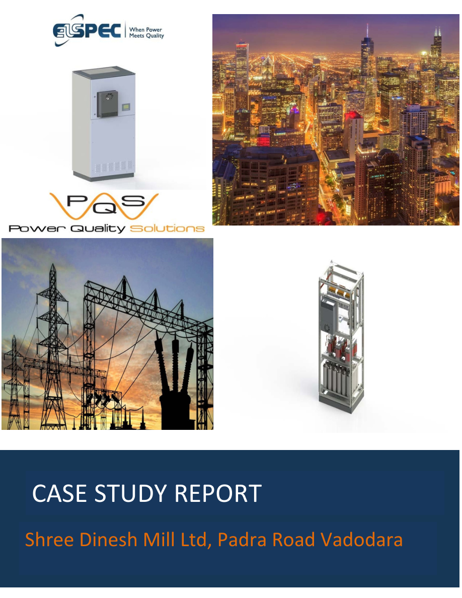
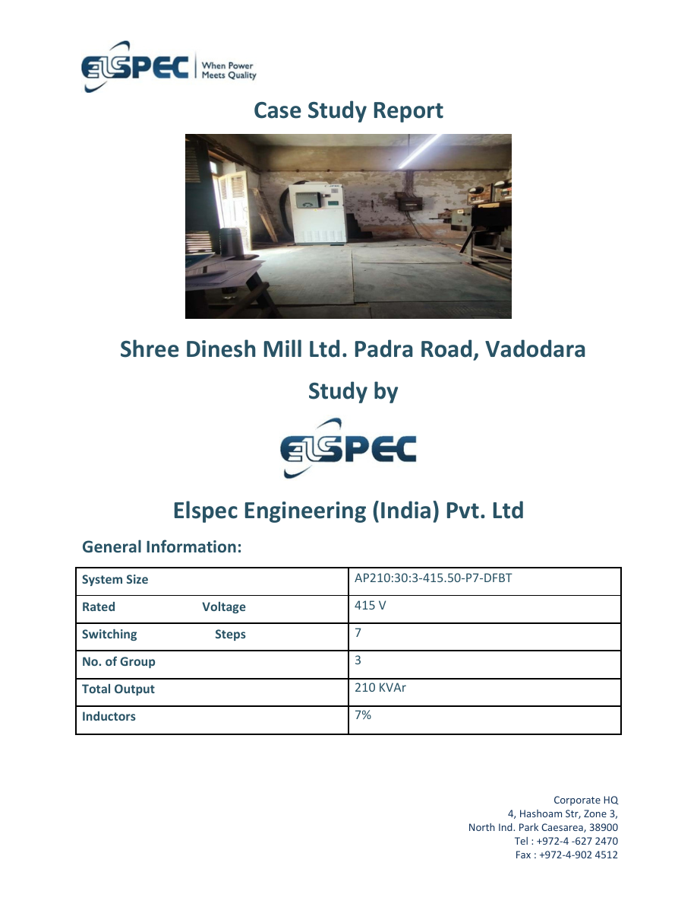
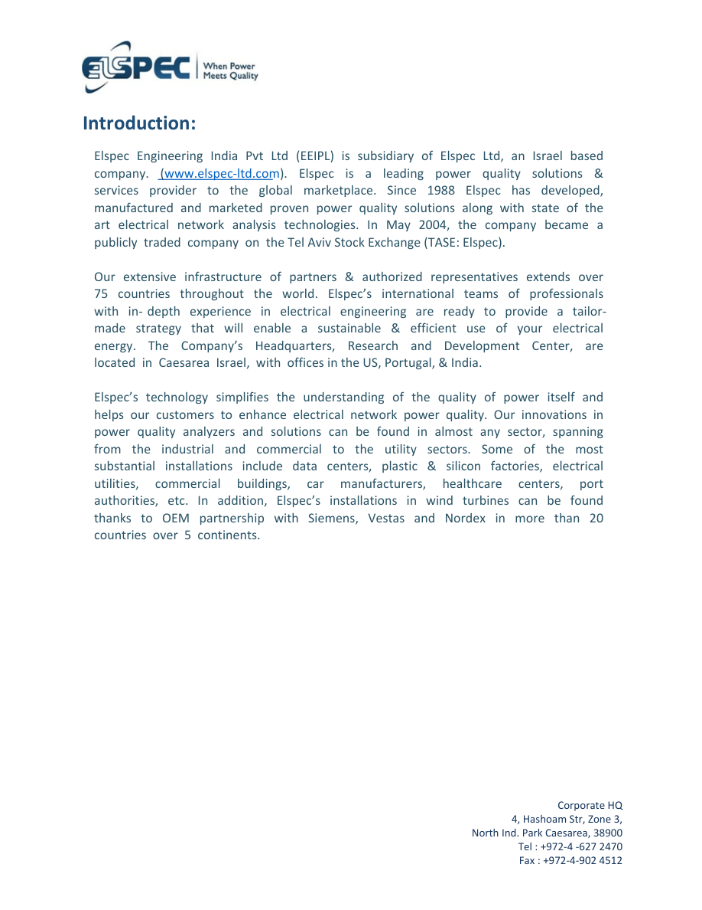
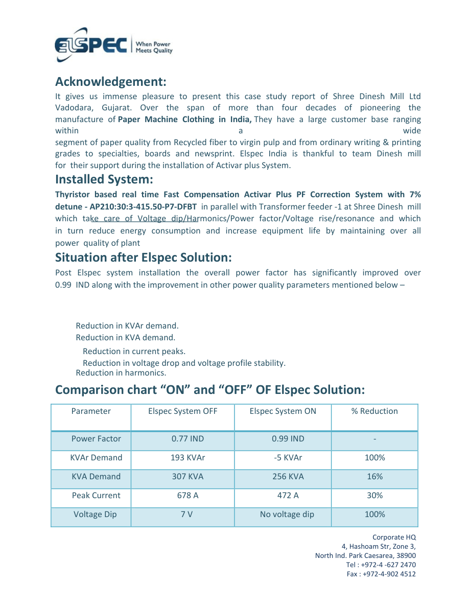
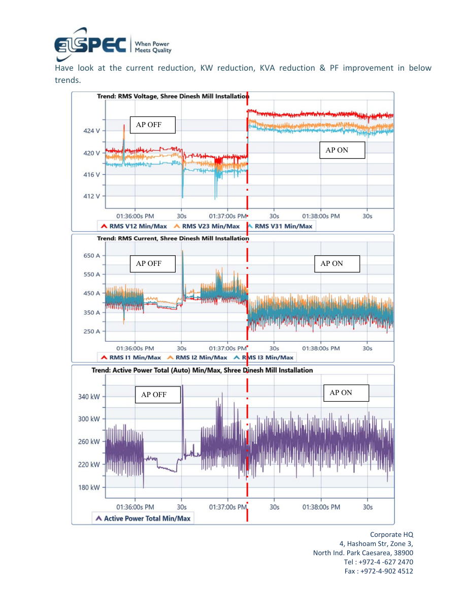
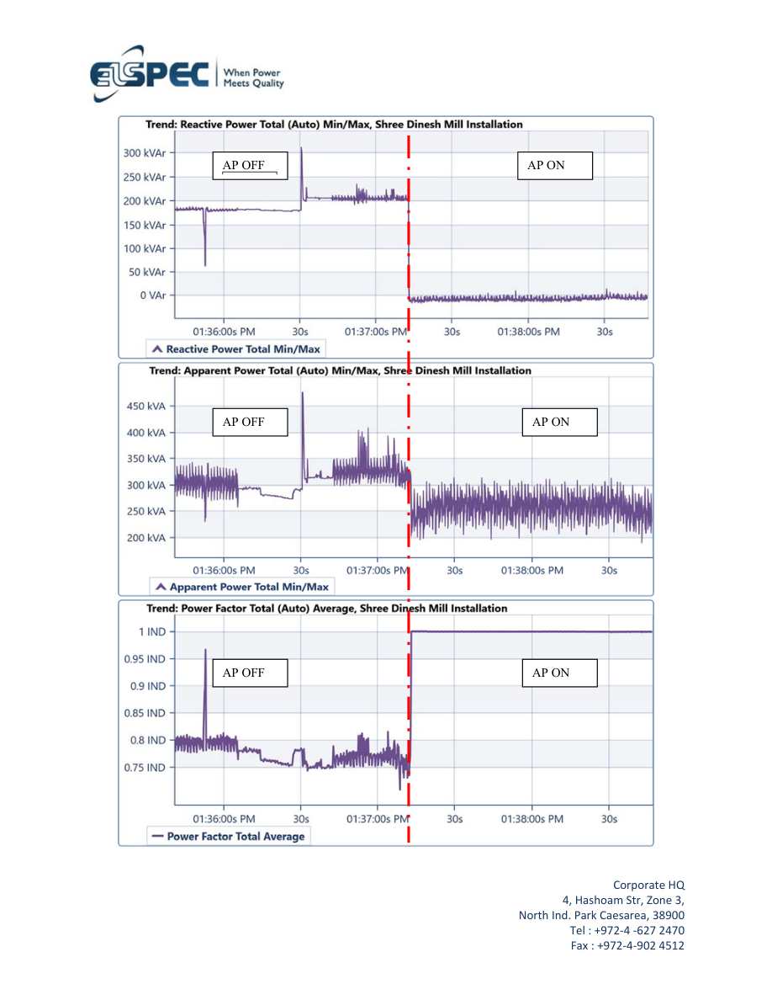
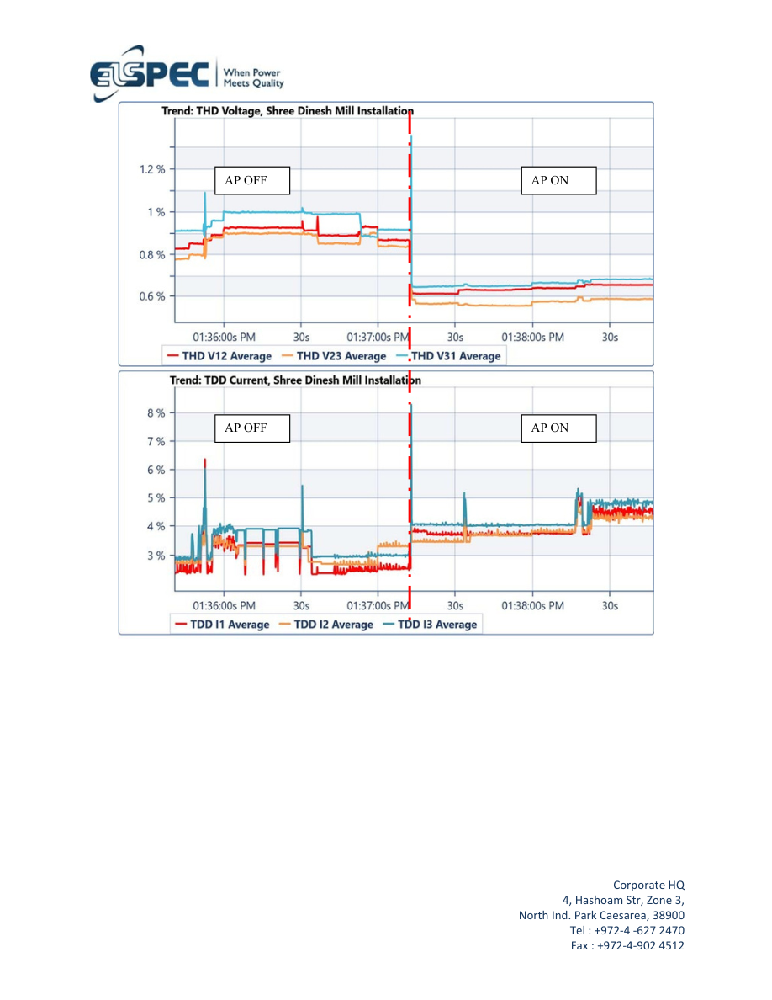
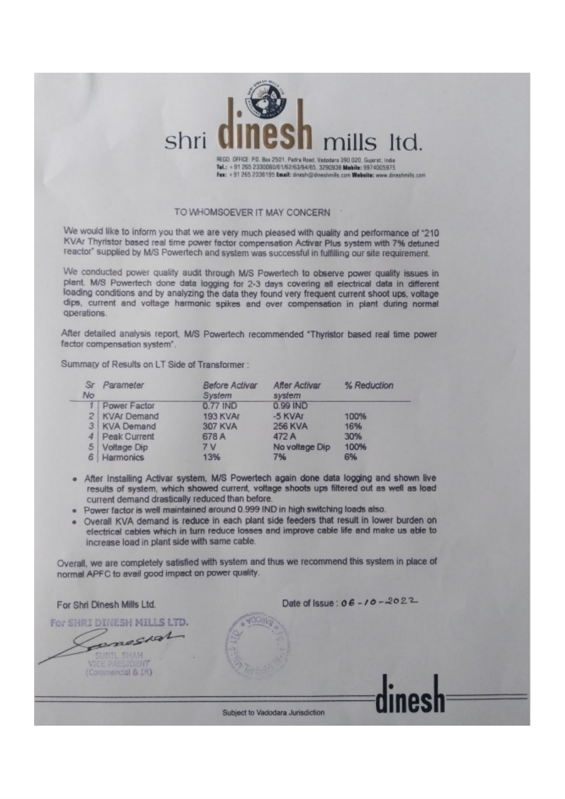

Shree Dinesh Mill Ltd. Power Quality Case Study
Explore the complete Elspec India report for Shree Dinesh Mill Ltd., Padra Road, Vadodara, including the installation context, measurements, graphs and results.
Power quality analysis at Shree Dinesh Mill
This report documents the power quality assessment performed at Shree Dinesh Mill Ltd. in Vadodara, Gujarat. The complete report is presented below as an in-page reading experience rather than a separate PDF download.
Scroll through the original report pages to review the recorded electrical measurements, graphs, observations and recommended improvements.
Padra Road, Vadodara, Gujarat.
8 pagesComplete report with measurements, graphs and conclusions.
Shree Dinesh Mill power quality assessment
Review every page of the report, including the site context, electrical measurements, graphs and findings.







